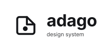
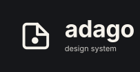
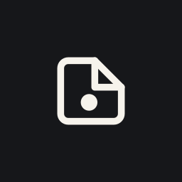

adago design
一张纸，
一个落笔的墨点。
adago design 的新标识：右上折角是画板/文档，左下墨点是落笔的 Inkwell。 延续 Black Swan 纸墨单色，在纸面、墨面与单色印刷里都保持同一个表情。


inverse · ink groundvariants
正形paper / ink
反形ink / paper
mark
96
64
40
24

inversesizes
162 × 83
81 × 42
49 × 25
数字最小宽度 72px；再小请改用 mark-only 变体。
spec
mark
24 grid · 1.8 stroke · round cap/join
wordmark
Inter 700 · 34px · tracking -0.4
clear space
≥ 0.5× mark height (26px @1x)
min width
72px digital · mark-only below
font
Inter · SIL OFL 1.1 · commercial + embeddable
contrast
16.9:1 positive · 16.2:1 inverse
#16171Aink · brand
#FBF8F1paper · ground
#F6F3ECpaper ink · inverse
字标在 SVG 中保留为文本；生产交付前建议转曲，或确认 Inter 已安装/嵌入。
反形标记 adago-mark-inverse 可作应用图标候选（1024×1024）。